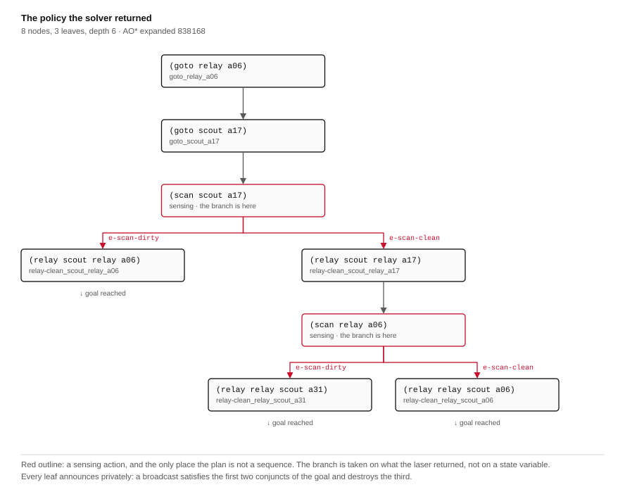
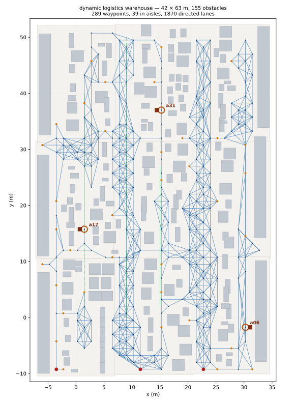
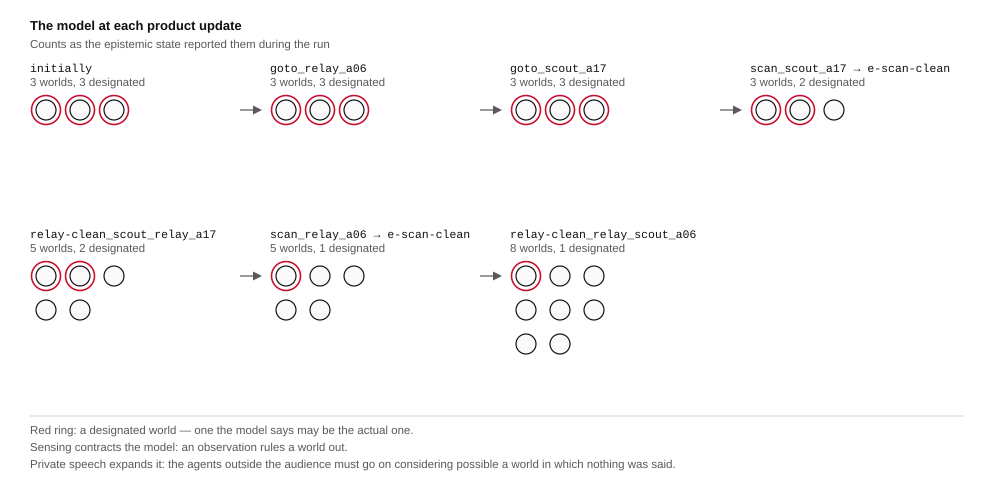

Open-RMF · three sites · two robots that look · ROS 2
The demonstration this follows says plainly what it does not claim: that a bigger floor makes an epistemic problem harder. It could not claim otherwise. (contaminated) was a proposition with no argument, there was one site, and the planner therefore could not care where anything was. Floor and epistemics sat side by side and never met.
They meet if contamination has a location. This page runs the same pipeline over a domain in which exactly one of three sites is contaminated and nobody knows which. That is one line of EPDDL — (contaminated ?s - site) — and it changes the search by four orders of magnitude, the policy from four nodes to eight, and the execution from one robot that looks to two.
It also produces a result the single-site domain cannot produce at any floor size. Down one leaf of the policy the team finishes knowing the state of a site no robot approached and no laser was ever pointed at — twenty-six metres from the nearer of the two the fleet did visit, forty-one from the other — because exactly one site is contaminated, two have been ruled out, and the third settles itself. The derived knowledge then travels over the private channel like any other finding, and the conjunct saying one agent must not come to know still holds over it.
The disclaimers of the previous page still bound this one. The nine walking figures are scenery: absent from the navigation graph, unperceived, unavoided. The private channel is topic addressing: the observer was not addressed on it, which is not the same as being unable to listen. To them this page adds a third: the two robots act one after the other, because the executor runs a policy strictly in order. Two agents doing physical work is not two agents working at once. And it withdraws one thing that page reported: its floor was measured from poses the simulator does not use, and the corrected figures are below.
The same floor — corrected — and the same fleet and bridge as Epistemic planning on a warehouse floor at scale. Domain and policy from eplansys, dispatched by eplansys-rmf, floor from dynamic_logistics_warehouse.
The domain
The single-site domain asks whether a site is contaminated. This one asks which of three is, and says in the initial state that exactly one of them is — which is common knowledge, while which one is known to nobody. The model therefore designates one world per site.
(:types site) (:predicates (contaminated ?s - site) (on-site ?i - agent ?s - site))
Everything else is held fixed: three agents, S5, the same semi-private sensing action, the same two private announcements, the same shape of goal. The measurements below are of that one change.
| one site | three sites | |
|---|---|---|
| atoms | 4 | 12 |
| worlds, designated | 2, 2 | 3, 3 |
| ground actions | 30 | 72 |
| AO* depth | 3 | 6 |
| expansions | 40 | 838 168 |
| policy nodes, leaves | 4, 2 | 8, 3 |
| robots that move | 1 | 2 |
| sites scanned | 1 | at most 2 of 3 |
The expansion count is the column worth reading. One site to two costs a factor of four; two to three costs a factor of 5 700 and adds three actions to the plan. Four sites is not solved: under the default fifteen-second budget the search reports Timeout at depth 7, and under a nine-hundred-second budget it reports Timeout at depth 8 after 901 s and returns nothing. Both are the budget running out rather than the space being refuted, so no claim is made here that four sites is unsolvable. What is measured is the price of one more site: sixty times the budget bought one further depth iteration. A version of this that wants four sites needs a better heuristic, not a longer wait.
Three sites is solved in about six seconds on this machine — 838 168 expansions, so better than 130 000 a second. That number is not a boast about the search. It is the reason the bringup broke, which is further down.
The policy

Two things in it are worth stating plainly, and neither is ours: both are the planner's.
Which robot is sent where is the planner's and not ours. The domain is symmetric in its three sites; the assignment above is what the search returned, and it happens to give the relay a 36.5 m errand, the scout a 26.8 m one, and to leave a31 alone.
Exactly one site is contaminated, so ruling out two settles the third. Down the leaf where both scans come back clean, the team finishes knowing the state of a31 — a waypoint 26.5 m from a17 and 41.4 m from a06, which no task ever names as a destination. In the world variant where the pallet is standing there, it stands there unobserved for the whole run.
This is what the single-site domain cannot do at any floor size. With one site there is nothing to eliminate, so every proposition the team ends up knowing is one some robot measured. Here one of them is not.
Including the two that convey which site is dirty. (relay scout relay a06), on the arm where the scout's scan came back dirty, says only that the scout knows a06 is clean. That is enough, and the reason is second-order: after the scan the relay considers three worlds possible, and the scout could only know a06 to be clean in the one where its own scan found a17. The other two are eliminated not by the content of the message but by what the speaker's knowing it rules out.
A representation that tracked only what is true could not express that step, and a planner that reasoned only about facts could not have found it. It is the plainest thing on this page that requires a Kripke model.
The sites

A site has to satisfy three things at once, and none is a matter of taste. A laser standing on it must read open in a world with nothing there, or the sensing action reports contamination in every world including the empty ones. The pallet that makes one world differ from another must stand on floor, clear of the racks, and clear of every lane the fleet may drive. And the two readings must fall unambiguously either side of the threshold, or the branch is decided by where the fleet happened to stop rather than by what is in the aisle.
tools/check_sites.py decides all three from the world's own collision extents — the same footprint table the navigation graph is rasterised from, so the two cannot disagree. Thirteen of the thirty-nine aisle waypoints qualify. a17 is a dead end — one lane in, and it is the way out.
| site | at | empty world reads | pallet | reads | off the nearest lane |
|---|---|---|---|---|---|
| a17 | (1.49, 15.75) | 1.48 m | west | 0.35 m | 0.35 m |
| a31 | (15.24, 37.00) | 1.24 m | west | 0.35 m | 0.35 m |
| a06 | (30.24, −1.75) | 1.71 m | east | 0.35 m | 0.35 m |
Where a side is admitted at all it is admitted by the minimum: 0.35 m beside the nearest lane, which is a robot's radius and ten centimetres. The sides that are refused are refused because they overlap a rack or put a prop across a lane the fleet drives. That check is the one the previous iteration shipped without and then needed, when a pallet jack placed for appearance overlapped a charger's lane by twenty centimetres and a robot stood pressed against it while RMF reported its task underway and nothing anywhere reported a collision.
The analytic model can be checked against the simulator, and the check is worth reporting in both directions. For the single-site demonstration's site, on the floor as it was read before the correction below, it predicted 0.89 m in an empty world and a pallet face at 0.35 m; that demonstration measured 0.88–0.89 m and 0.32–0.34 m, and a multi-site run on the same floor measured 0.89 m. The pallet face is reliable, because the pallet is a box whose height the model and the laser agree on.
The empty-world reading is not, and the runs below show it: the model predicts 1.71 m at a06 and the laser returned 2.25 m, and it predicts 1.48 m at a17 where the laser returned 0.97 and 1.08 m. Both differences have the same source. The model is two-dimensional and the laser is a plane at 0.26 m, so anything shorter than that is an obstacle to the model and invisible to the scan; and the nine actors are excluded from the model deliberately and are entirely visible to the scan. What the model is good for is refusing a site, not predicting a reading — the sites it admits have more than a metre of clearance, and that margin is what absorbs half a metre of disagreement.
The runs
The floor is built four times. The variants differ by where one pallet stands and by nothing else: same hall, same 155 obstacles, same nine actors, same navigation graph, same binary, same domain, same goal, same 0.70 m threshold. One object moves.
| pallet at | scan a17 | scan a06 | leaf taken | actions | checks |
|---|---|---|---|---|---|
| a17 | dirty, 0.33 m | not reached | relay-clean_scout_relay_a06 | 4 | 11 of 11 |
| a06 | clean, 1.08 m | dirty, 0.41 m | relay-clean_relay_scout_a31 | 6 | 11 of 11 |
| a31 | clean, 0.97 m | clean, 2.25 m | relay-clean_relay_scout_a06 | 6 | 11 of 11 |
Three worlds, three different leaves of one policy, and the leaf is decided by numbers read off two lasers. The third row is the one the domain exists for: both scans return clean, nothing is ever measured at a31, and the team concludes a31 anyway.
The fourth build is a control and is not in the table. The domain says exactly one site is contaminated, so a world with no pallet contradicts the problem the planner was given; running it shows what the fleet does when the world and the model disagree, which is worth knowing and is not a demonstration of anything working.
r1 at a06 (0.27 m from it), nearest return 2.25 m -> e-scan-clean r2 at a17 (0.31 m from it), nearest return 0.97 m -> e-scan-clean scout says e-scan-clean on /eplansys/channel/private/relay relay says e-scan-clean on /eplansys/channel/private/scout mission complete
The observation is sensed and not asserted. Both scanning robots carry a planar laser on the mast at 0.33 m, 180 beams over the full turn, returns admitted between 0.12 and 3.5 m. scripts/site_perception.py subscribes to /fleet_states and to each robot's own scan topic, and withholds any verdict until the fleet has placed that robot within 0.40 m of a site on three consecutive reports. Only then does it read the nearest finite return, compare it against 0.70 m, and publish.
applied goto_relay_a06: 3 worlds, 3 designated applied goto_scout_a17: 3 worlds, 3 designated applied scan_scout_a17 -> e-scan-clean: 3 worlds, 2 designated applied relay-clean_scout_relay_a17: 5 worlds, 2 designated applied scan_relay_a06 -> e-scan-clean: 5 worlds, 1 designated applied relay-clean_relay_scout_a06: 8 worlds, 1 designated

Sensing contracts the model and private speech expands it, for the same reason as on the single-site floor: learning something removes possibilities, and telling somebody something privately adds one, because the agents outside the audience must go on considering possible a world in which nothing was said. What is new here is the middle of the table. A scan that comes back clean does not settle anything on its own: it takes the designated set from three to two and leaves the team unable to say which of the remaining pair it is in. Only the second scan settles it, and the team has to spend a second announcement after that before the goal holds.
ok (Kw scout contaminated_a06) holds ok (Kw scout contaminated_a17) holds ok (Kw scout contaminated_a31) holds ok (Kw relay contaminated_a06) holds ok (Kw relay contaminated_a17) holds ok (Kw relay contaminated_a31) holds ok (Kw observer contaminated_a06) does not hold ok (Kw observer contaminated_a17) does not hold ok (Kw observer contaminated_a31) does not hold ok relay was spoken to, 1 time(s) ok observer was spoken to by nobody the mission came out as specified: 9 formulas against the state the fleet left behind, and 2 transcript(s) of who was spoken to.
The first nine interrogate the epistemic state and establish where the model finished. The last two read the agents' radio transcripts and establish who was in fact addressed. They are claims of different kinds, and the second is the weaker: a negative epistemic conjunct is satisfied by everything that fails to occur, so a procedure consulting only the model cannot tell deliberate secrecy from an absence of communication.
What broke
None is an error inside any component. Each is a property of the composition, and each was invisible while the domain had one site and one robot that looked.
| Symptom | Cause | Class |
|---|---|---|
| The navigation graph is a floor plan of a warehouse the simulator does not load | The world carries a saved <state> block, and Gazebo applies it over the poses the models declare. Fourteen disagree, one by 149 m | Geometric |
| A 14 × 21 m floor slab is placed at the origin | Two <state> poses have their numbers run together, so a whitespace split yields a token that is not a number and the obvious fallback is zero | Parsing |
| The graph routes through a bucket and a desk | Both are nested inside a <model name="Untitled"> group. A scan of the world's direct children sees only the group, whose name is in no footprint table | Geometric |
| The planner returns a good policy to a system that has already shut down; the mission fails at send_goal failed | The readiness test was “does the domain expert answer”, and a configured node answers. A seven-second search then starves the bringup's own activation calls, which share the process | Race |
| A scan reports a genuine measurement, taken by the right sensor at the right place, for the wrong site | One performer per action name and one latched observation topic. The second scan is handed the first one's answer the moment it subscribes | Composition |
| The executor prints Error checking over all reqs fifty times a second, for ever | Four files name the sites and nothing checked they agreed. Three were renamed and the fourth was not, so the mission declared objects the policy does not mention | Duplication |
| One branch of three sits for ever on Error checking at start reqs: (and (scanned scout a06)) | The classical half required the speaker of an announcement to have scanned the site it names. This domain's whole point is that it need not have | Modelling |
| The post-run check reports three formulas UNCHECKED and the mission failed, on a run that came out exactly as the goal asked | The check node's defaults are the single-site formulas, and this domain has no atom contaminated: plank grounds (contaminated ?s) into one atom per site | Configuration |
This is the one that matters, because it is upstream of everything. A Gazebo world may carry a saved <state> block recording where every model actually is, and Gazebo applies it at load in preference to the poses declared on the models themselves. This world has one, recording 178 poses. Fourteen of them disagree with the declaration: by 0.19 m for one floor slab, by 3.8 and 4.1 m for two more, by 49.8 m for a fourth, and by 149 m for a cluttering prop that the declaration puts inside the building and the state puts well outside it.
The rasteriser read the declarations. So the map had obstacles where the floor is clear, clear floor where an obstacle stands, and slabs in the wrong place — and every symptom of that is a robot behaving correctly in a world the planner has the wrong map of, which is the hardest kind of fault to attribute.
| declared poses | the poses Gazebo loads | |
|---|---|---|
| obstacles | 153 | 155 |
| waypoints | 261 | 289 |
| directed lanes | 1 652 | 1 870 |
| aisle waypoints | 35 | 39 |
| chargers | all three moved, one by 11 m | |
The figures the previous page reports are the left-hand column. They are superseded by the right.
The charger move is why the fleet launch now reads spawn poses from the graph rather than holding them as constants: a pose copied from an older graph puts a robot somewhere RMF does not think it is, and the first command is then issued from a place the robot is not. And the single-site demonstration's own site does not survive the correction — on the corrected floor no side of it admits the pallet — so that demonstration now runs at a17 too.
The whole planning system is one process, and a plan request is served on the same executor the bringup's lifecycle calls arrive on. Solving the single-site problem is forty expansions and returns before anybody notices. Solving this one holds the process for seven seconds, during which the lifecycle manager's activate calls go unanswered and the bringup gives up with Failed to start plansys2!. The planner then hands back a perfectly good eight-node policy, and the mission dies forty log lines and several seconds later on an unrelated-looking error. The fix is to wait for every managed node to be active rather than merely to answer.
The search time is a property of the domain. The bringup is a property of the framework. They interact because they share a process, and nothing in either says so.
The first fix for the shared observation topic was to timestamp readings and ignore any that predated the action. It is wrong, and running it shows why: a robot commonly arrives at its site during the goto that precedes the scan, so the correct reading is already seconds old when the scan begins. A rule that accepted only fresh readings would discard the right answer and fall through to the task map's stand-in — which, because the launch writes that stand-in from the same argument that places the pallet, would have been correct, and the defect would have shipped invisible.
Readings are therefore published as <site> <outcome> and the bridge looks up the site its action names. Two scans of two places cannot answer for each other however they are ordered in time.
The classical half of this mission is deliberately blind — it cannot tell a broadcast from an encrypted relay — but it still gates the actions the executor drives, and one of its gates was an assumption this domain exists to refute. relay required (scanned ?from ?s): the speaker must have scanned the site it reports on. With one of three sites contaminated, ruling two out settles the third, so the announcement that carries the finding names a site the speaker has never been to.
What makes it worth recording is that only one branch shows it. Where the first scan comes back clean the relay is about the site just scanned, and the condition holds; where it comes back dirty the relay is about a different site, and the executor sits on the failed condition for ever. Two of the three worlds ran green with the wrong condition in place.
Given the wrong formulas, the post-run check reported them UNCHECKED and failed the run rather than reporting that nothing holds. That distinction is the one the previous page argued for — a transcript that fails to arrive is not an agent that heard nothing — and here it is the difference between “your formulas are wrong” and “your mission failed”. A check that answered false to a question it could not parse would have made a correct run look like a broken one, and a broken one look correct.
On the floor as it was read before the correction, the scout stopped 2.5 metres short of its site, in open floor with 1.05 m of clearance, and never moved again. It did so twice, at the same coordinates to three decimals. Its own laser saw something 0.23 m behind it, fixed in the world — moving the robot 0.86 m moved the reading by 0.85 m at the same bearing — and nothing in the world file, at any nesting depth, in the declared poses or the recorded ones, and no actor on any of its trajectory legs, is within 1.9 m of that point. The fleet manager reported the robot 10.5 seconds from its destination for four minutes.
It has not recurred on the corrected floor and it is not understood. It is recorded because a stall that presents as a task permanently underway, with no component reporting an error, is the same signature as the pallet jack, and because an unexplained observation is worth more written down than left out.
Scope
Stated in the existential register: there exists a run in which each held.
A team came to know something about a place none of its members visited. Both scans returned clean, the third site was settled by elimination, and the finding travelled over the private channel like any other. The negative conjunct held over it, checked against the model and against the transcripts.
Two robots each contributed a measurement, at sites metres apart on a roadmap derived from the world. The relay's site and the scout's are 26.8 and 36.5 m from their chargers, and 33.7 m apart. Which sites to inspect, and in what order, is a decision the planner takes, and the sites are transits apart. That is the coupling between floor and epistemics the previous page correctly said it did not have.
One policy took three different leaves in three worlds differing by one object. A conditional policy that reaches its goal down every branch is what planning under partial observability is for, and it is not demonstrated by a run that only ever takes one branch.
Concurrency. The executor runs a policy strictly in order, so the relay's transit finishes before the scout's begins. Two agents doing physical work is not two agents working at once, and nothing here forces two robots into one corridor at the same moment. The instrumentation is in place and the experiment is not.
Scaling. Three sites is one point, and four is not solved inside an hour of budget. What is measured is the cost of the third site, not a curve.
Object recognition. The perception node thresholds the nearest finite return of a planar scan against a distance chosen for these sites. It establishes that something is close to the robot at a waypoint where, in the clean world, nothing is. It does not identify what.
Navigation among moving obstacles. The nine actors walk fixed circuits and are absent from the navigation graph. The fleet neither perceives nor avoids them.
Confidentiality. The private channel is realised by addressing: any node may subscribe to any topic. The claim available is that the team used a channel on which the excluded agent was not addressed, not that it could not have listened.
That the floor is now right. What is established is that it was wrong, and in what direction. The correction reads the poses Gazebo applies rather than the ones the models declare, and the numbers above are what follows from that; whether anything else in this world is described in a way its own loader disagrees with has not been established, and one stall on the old floor is still unexplained.